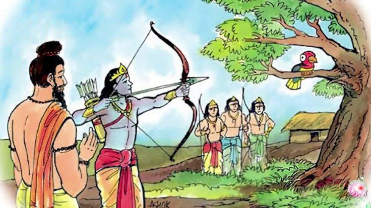

The Story

Dronacharya, the master of archery, calls his students to the practice field. He tells them that skill is not only about strength, but about attention that does not waver.
He places a wooden bird high on a tree and asks each student to step forward. The test seems simple, but Drona wants to see how each mind approaches the target.
The first student looks up and describes the tree, the branches, the sky, and the bird itself. Another sees the leaves and the wind. Their answers are honest, but scattered.
Drona listens patiently. He is not looking for quick words; he is listening for clarity. He wants to hear the voice of a mind that can narrow itself to one true point.
One by one, the students speak. Each sees many things. Drona nods and asks them to step aside. The test continues.
At last Arjuna steps forward. His bow is steady, his eyes fixed. Drona asks what he sees, and Arjuna answers with a single word: the eye.
Drona asks if he sees the tree. Arjuna says no. The branches? No. The sky? No. Only the eye.
Drona smiles and tells him to shoot. Arjuna releases the arrow, and it strikes the eye perfectly.
The lesson is not just about skill with a bow. It is about a mind that can cut through distraction and hold to a single purpose.
The other students watch and understand. Talent alone is not enough. Training becomes powerful when attention is disciplined and steady.
Arjuna's success is the reward of patience, practice, and a clear target. He is not praised for luck, but for focus.
Drona tells them that in battle and in life, the mind that wanders loses its aim. The mind that concentrates finds its mark.
The test becomes a story retold to new students. It is a lesson about how to see what truly matters.
In the days that follow, Arjuna practices with renewed intent. He understands that focus is not a gift, but a discipline.
He learns to quiet the noise of doubt and to steady his breath. Each arrow becomes a conversation between attention and action.
Drona watches and corrects his stance. He teaches that strength must be guided by calm, and speed by precision.
The others practice as well, but they remember the bird's eye and the clear answer. The image stays with them.
Over time, the story grows into a proverb. Parents tell children to focus like Arjuna, students repeat it before exams, warriors recall it before battles.
It is not a story of arrogance, but of effort. Arjuna does not boast. He simply does the work, again and again.
The tale also teaches humility. To see only the eye is to admit that everything else can be set aside when purpose is clear.
It teaches patience. The target will not move, but the mind will, and the mind must be trained to return.
It teaches discipline. Mastery is built in quiet hours when no one watches, and in repeated effort when praise is absent.
The test is simple, yet the lesson is deep. Focus is a bridge between intention and achievement.
When the mind is steady, even a difficult goal becomes attainable. The arrow finds its mark because the archer has found his center.
Dronacharya's teaching endures because it speaks to every craft and every struggle. Whether one writes, builds, learns, or leads, the principle remains the same.
Arjuna's eye is a symbol of clarity. It reminds us to ask: what is the true target, and what can be set aside?
The story closes with the quiet sound of an arrow striking its mark. It is the sound of attention turned into action.
And so the lesson passes forward, from teacher to student, from generation to generation: see the eye, and let everything else fall away.